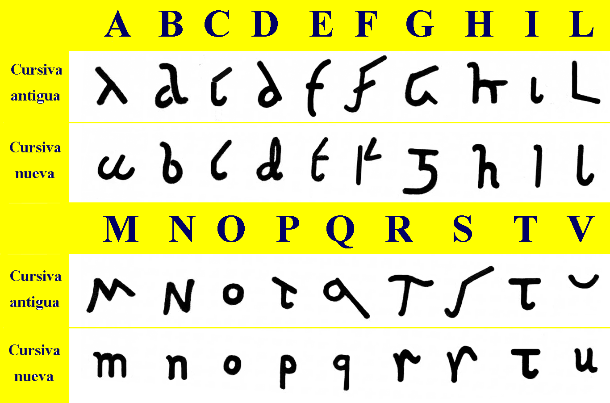
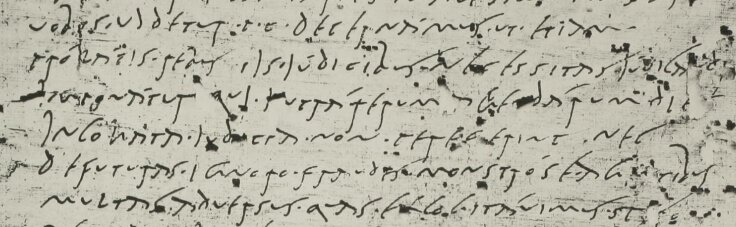

I've recently gone down a rabbit hole of historical handwriting, and one that's particularly interesting to me is Old Roman Cursive.

Old & New Roman Cursive. Look at them! Aren't they just the coolest?
Old Roman Cursive is notably illegible. That's commonly cited as the reason why nobody writes with it anymore: it's a write-only language.

Can you read this?
Roman Cursive descends from Rustic Capitals, a method of writing by brush or pen the very fancy Roman Capitals. Because these would generally be written on rough papyrus, they had to split complex letters into simpler strokes. Of course, Roman Cursive just takes that several levels further.
Anyways, my point here isn't actually that Roman Cursive is just the coolest, or something like that. In fact, when I say I'm "writing in Roman Cursive," it's bullshit — I'm writing in a style inspired by Roman Cursive.
See, I believe firmly that handwriting isn't just about communicating an idea: the character of a writer is communicated through the shapes and forms of their handwritten characters. I was taught and raised to write in print, then taught cursive, then allowed to go back to print, etc., etc. The growth of my handwriting, therefore, does not represent me, but rather my teachers and the processes which formed me. (Some may say that is just as important — and some may disagree.)
I encourage everyone to think strongly about their handwriting. Is there a reason they write each letter a certain way? Try writing it differently. Can you still read it? Do you like it? Keep it. Allow yourself to shine through in your letter forms!